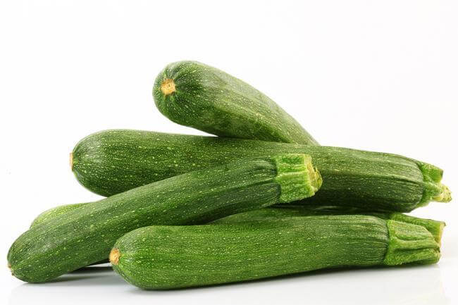
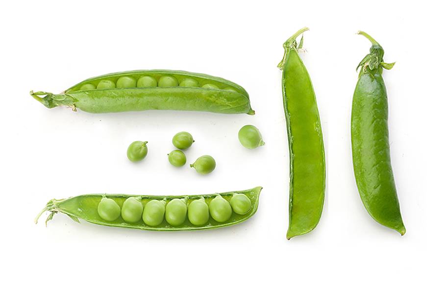

Produzione 2019
Zucchine

Coltivare in terreno molto ricco di materia organiza e non coltivare dopo Solabacee o piante della stessa famiglia delle cocurbitacce
- Varietà: Zucchina chiara di Faenza
- Periodo di Semina: Marzo/Aprile
- Primo raccolto: Fine Aprile
- Ultimo raccolto: Fine Luglio
- Raccolto
| Dimensione |
Quantità |
| Piccole (10cm) |
16 |
| Medie (11-16cm) |
26 |
| Grandi(<16cm) |
9 |
|
51 |
-->Acquista Semi<--
Piselli

American Wonder: Varietà media precoce come ciclo culturale
Consigli
- Piantare in semenzaio riscaldato.
E' importante
- Acquistare vasetti biodegradabili (di cocco o cartone)
- Mantenere arcata il semenzaio per evitare muffe
- Non usare il coperchio semenzaio
- Non usare mettere il semenzaio vicino al termosifone
- fissare i sostegni nel terreno non appena le piantine raggiungono i 10cm
- Acquistare una rete con spazi di non più di 10cm per garantire i sostegni adeguati
-->Acquista Semi<--